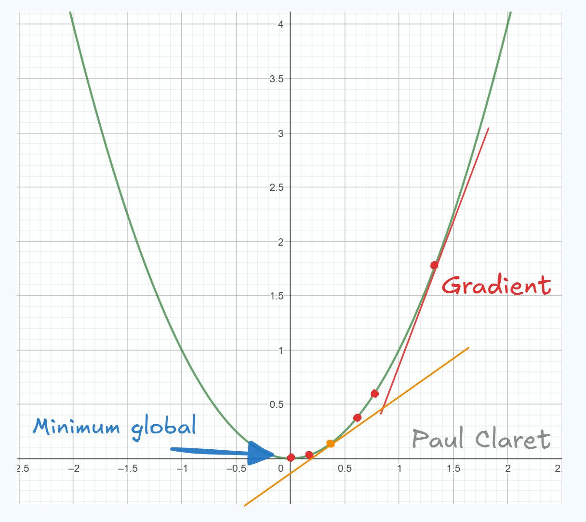

Explication du Gradient pour l'IA

By Paul Claret
5 minutes read - 28/11/24
Si vous avez fait des étude sup avec des maths, vous savez peut-être ce que c'est et le concept vous es plutôt familier. Sinon, je peux comprendre que vous soyez perdu. Alors voici comment fonctionne le gradient en mathématiques.
Le gradient est un outil mathématique et physique qui prend une fonction (généralement) à plusieurs variables en entrée et sort les dérivées partielles de cette fonction en tout point.
Ce qui donne en réalité, la direction de la variation de la fonction. Oui, la définition dit comme ça n'est pas très claire, mais en une image, c'est plus simple:Version graphique
En 2D ici, vous remarquez que j'ai tracé la fonction en vert. Cette fonction a un minimum global en qui vaut . Le gradient de la fonction est la tangente à la courbe en rouge. Vous voyez que visuellement, elle représente une pente qui se dirige vers ou s'éloigne du minimum global (ça dépend si vous lisez le graphique de gauche à droite ou droite à gauche). Plus on s'approche du minimum global, plus la pente est douce (voir pente orange). Et enfin, en 0, la pente est horizontale.
C'est plus simple vu comme ça, n'est-ce pas ?
Cette représentation visuelle est la plus utile pour apprendre le deep learning et l'intelligence artificielle puisque comme cous avez le voir dans un autre article que j'ai écrit sur la descente de gradient stochastique, c'est cette visualisation qui est la plus intuitive.
L'exemple que je vous ai donné en 2D marche aussi en 3D. La fonction est un peu plus compliquée pour tracer la géométrie, mais le principe reste le même:

source: https://images.app.goo.gl/gzTtrnvDPSEiwqM87
Sur cette image, vous voyez bien que la fonction en 3 dimensions représentées par le plan en bleu et rouge possède des bosses et des creux. Les flèches sur l'image passent d'une "altitude plus élevée" à une altitude plus faible, autrement dit, elles passent des bosses aux creux. Si vous êtes malin, vous remarquerez que la flèche va dans un creux puis remonte et va dans le creux plus profond. Si vous voulez savoir pourquoi, je l'explique dans l'article sur la descente de gradient stochastique ainsi que le moment et les optimisations. Mais ce n'est plus de l'ordre du simple gradient.
Version algébrique
En reprenant l'exemple précédent, le gradient de la fonction carré est . Puisque comme je l'ai dit, *"le gradient d'une fonction sort les dérivées partielles de cette fonction"*. La définition algébrique est donc la suivante
Si votre fonction comme la fonction carrée ne comporte qu'une variable, la définition du gradient se simplifie ne enlevant les termes avec les y et z. De même, si vous voulez rajouter une variable temporelle t, vous rajouterez un autre terme
Comme vous pouvez le voir, le gradient n'est pas un outil compliqué en soit. Ce n'est qu'une somme de dérivées partielles.
Si vous ne savez pas ce que sont les dérivées partielles, je vous recommande cette vidéo de la khan academy:
Khan Academy - Derivées partielles
C'est une des meilleures ressources que je connaisse pour apprendre les maths en autonomie donc n'hésitez pas à aller les voir pour n'importe quel problème mathématique.
Vous voulez apprendre l'IA en autonomie ?
Si vous êtes nouveau sur mon site, je vous invite à aller voir ma page sur Roadmap IA qui regroupe tous mes articles dans l'ordre pour vous facilitez l'apprentissage.